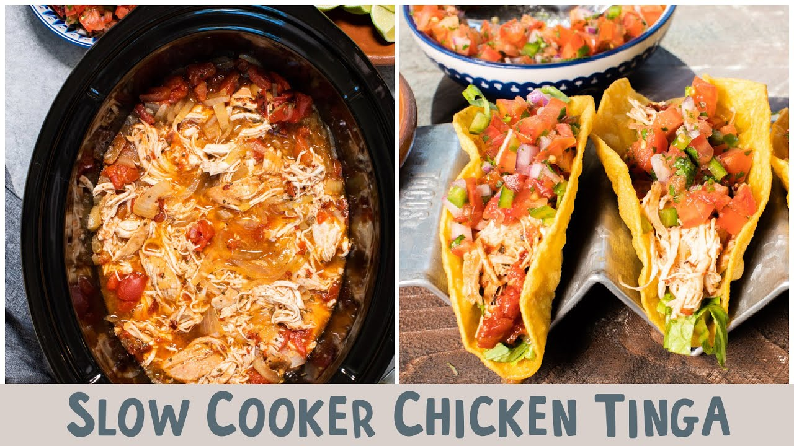

Home
Chicken Tinga

Ingredients
- Chicken thighs (consider bone-in)
- 2-5 canned chiptole peppers
- 3 garlic cloves
- 1 onion
- 3 tsp kosher salt
- freshly cracked black pepper
- 1 tsp cumin
- Mexican oregano
- chili powder
- one whole bay leaf
- smoked paprika
Instructions
- Roughly chop onion, smash garlic cloves
- Add onion, garlic, chipotle peppers, chicken & spices to a crock pot
- Let it braise on low for 6 hours or high for 3 hours
- Remove the chicken to cool, set crock pot to high
- Use an immersion blender to turn braising liquid into a smooth sauce
- Shred the chicken (with your hands or two forks) and return it to the sauce
- Serve chicken as part of nachos, tacos, toastados, quesadillas, or enchiladas.
¡Buen provecho!